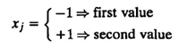
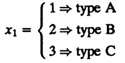
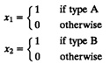
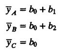
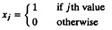
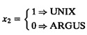

| Previous | Table of Contents | Next |
The correlation is in fact high. This may be due to large programs (programs with large memory sizes) doing more I/O’s than small programs. Th get a meaningful regression, we could try eliminating one of the two variables. In Example 14.1, we have already regressed CPU time on number of disk I/O’s and found that the regression parameter was significant. Similarly, in Exercise 14.3, CPU time is regressed on the memory size, and the resulting regression parameters are found to be significant. Thus, either the number of I/O’s or the memory size can be used to estimate CPU time, but not both.
One important lesson to learn here is that adding a predictor variable does not always improve a regression. If the variable is correlated to other predictor variables, it may reduce the statistical accuracy of the regression.
If an analyst wants to choose the right subset of predictors from a set of k possible predictors, the simplest alternative is to try all 2k possible subsets and choose the one that gives the best results with a small number of variables. Several different trade-offs may have to be made in selecting the subset. For example, some variables may be easier to measure and are better suited as predictors than others. With increasing availability of computing power, trying all 2k subsets is usually not a problem for reasonable values of k and sample sizes. In any case, a correlation matrix for the subset chosen should be computed and checked to see that the correlation among the chosen predictors is low.
Regression can also be used in one or more of the predictor variables as categorical variables—variables that are nonnumerical. For example, CPU type is a categorical variable. If you have performance data on three CPUs of types A, B, and C, you can use regression to model the data as discussed in this section.
Note: If all predictor variables are categorical, you should use one of the experimental design and analysis techniques described in Part IV of this book. Although the technique presented in this section can be used for several categorical predictors as well, statistically more precise (less variant) results will be obtained using factorial designs described in Part IV. Therefore, the use of the technique described in this section should be limited to the case of mixed predictors where most predictors are quantitative and only a few predictors are categorical.
To represent a categorical variable that can take only two values, we can define a binary variable, for instance, xj, as follows. The advantage of this coding is that the regression parameter bj represents the difference in the effect of the two alternatives. If the parameter is found to be statistically insignificant, the two alternatives can be assumed to provide similar performance.
The levels of the binary variable can also be –1 and +1. Thus,

The parameter bj in this case represents the difference from the average response for each level. The difference of the effects of the two levels is 2bj.
If the categorical variable takes three values, for instance, A, B, and C, the coding is not obvious. One alternative, which is undesirable, is to define a three-valued variable as follows:

The problem with this coding is that it implies an order. It attempts to represent B halfway between A and C. In general, this is not true. The regression parameters, in this case, do not provide any meaningful information. The recommended coding is to use two predictor variables, for instance, x1, and x2, defined as follows:

Thus, the three types are represented by (x1, x2) pairs as follows:
(x1, x2) = (1, 0) ⇒ type A
(x1, x2) = (0, 1) ⇒ type B
(x1, x2) = (0, 0) ⇒ type C
The coding does not imply any ordering among the types. Also, it provides an easy way to interpret the regression parameters. Suppose the regression model with this coding is
y = b0 + b1x1 +b2x2 + e
The average responses for the three types are

Thus, the parameter b1 represents the difference between average responses with types A and C. The parameter b2 represents the difference between average responses with types B and C. The parameter b0 represents average response with type C.
In general, the number of values that a categorical variable can take is called its level. Thus, to represent a categorical variable with k levels (or k categories), we need to define k – 1 binary variables as follows:

The kth value is defined by x1 = x2 ... = xk–1 = 0. The regression parameter b0 represents the average response with the kth alternative. The parameter bj represents the difference between the average responses with alternatives j and k.
Given k alternatives, if one of the alternatives represents the status quo or a standard against which other alternatives have to be measured, that alternative should be coded as the kth alternative since the differences from the kth response are directly available as regression parameters.
y = b0 + b1x1 + b2x2

| Previous | Table of Contents | Next |